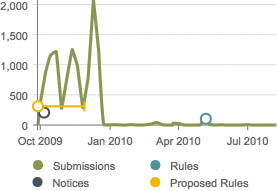
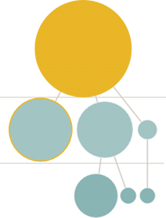

Track Rulemaking Dockets
Get a graphical overview of any one of over 100,000 federal rulemaking dockets, then drill down into the rules and notices it contains, and the comments on those rules. See who commented and when.
Investigate Similar Comments
Group similar comments within a rulemaking docket to identify commonly-used comment language, and to catch form letter commenters in the act.
Explore Popular Searches
- obamacare
- firearm
- standardized testing (submitted to the Department of Education)
- fuel economy (submitted by General Motors)
- table saw